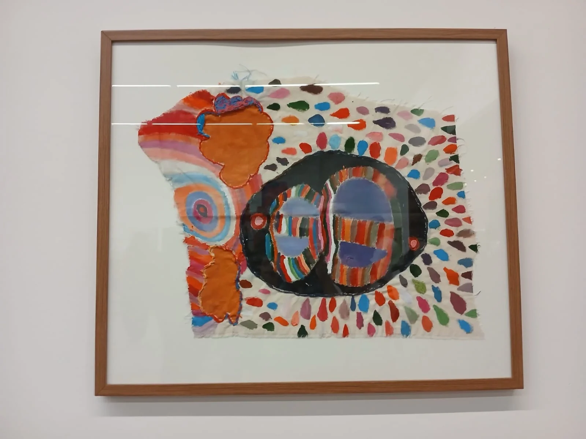

Oficinas
Sustentação teórica
do trabalho com oficinas.
O tratamento construído a partir de oficinas artísticas se fundamenta principalmente a partir de dois conceitos psicanalíticos: sujeito e voz. Estes conceitos se diferem da significação dos termos no senso comum. De Sigmund Freud à Jacques Lacan, a Psicanálise contribuiu com a compreensão de que não nascemos sujeito, nos constituímos. Esse processo de constituição subjetiva está intimamente relacionado com a concepção de que o campo do sujeito, segundo Lacan, é efeito, em especial, da linguagem.
Em complemento a isso, no trabalho desenvolvido pela Ponte, evidenciamos a importância da voz nos processos de subjetivação. Esse conceito voz, conforme Vivès (2013) historiciza, foi identificado como objeto por Lacan a partir do campo das psicopatologias e foi levado então, em sua teoria, para a dialética das pulsões*. Ali, ele identificou dois tipos de objetos pulsionais cruciais na constituição subjetiva: objeto da demanda e objeto do desejo - sendo este último constituído pelo olhar e pela voz.

Sujeito
e voz.
A criança, quando chega ao mundo, é olhada o tempo todo, sem que ela saiba de onde ela é olhada. Para que a criança comece a ter prazer em olhar, é preciso que ela esqueça de um olhar externo que pesa sobre ela e a pressiona. O mesmo acontece com a voz. A dificuldade é que esses objetos pulsionais são essenciais para que o sujeito advenha, mas para isso, também é importante que se mantenha distância deles. Existe, portanto, uma ambivalência essencial do olhar e da voz. Ao mesmo tempo que é importante que eles estejam presentes, que haja o seu endereçamento à criança (e ela, então, vai poder falar, querer ser escutada, desejar olhar e ser olhada), se a criança é capturada e presa por esses objetos inicialmente externos, ela terá muitas dificuldades (ou até mesmo uma capacidade reduzida) de desenvolver uma linguagem subjetiva e sua própria voz. Nem todos conseguem fazer essa separação tão facilmente, tanto no que diz respeito ao olhar quanto à voz, o que traz dificuldades na constituição subjetiva. A Equipe Ponte trabalha com esse público-alvo que apresenta importantes impasses no laço social e que têm relação com a constituição subjetiva e com a voz de cada um.
O trabalho realizado com as oficinas artísticas se embasa nos estudos de Alain Didier Weill, psicanalista que resgata em Lacan os conceitos de sujeito e voz e de Mauro Mendes Dias, psicanalista que se utiliza desses estudos para apontar a música e a arte como aliadas ao tratamento em casos de graves dificuldades no laço social. Nosso trabalho tem o objetivo de, conforme Vivés (2013) nomeia, propiciar um ambiente terapêutico (clínico) em que estejam presentes “armadilhas” que tiram de cena esse olhar e voz primordiais que pesam, prendem e inibem o sujeito de emergir, de modo a trazê-lo à tona em um trabalho com sua própria voz. Para isso, a música é mesmo essencial e permeia todas as oficinas oferecidas. Ela toca, a dança leva, o corpo mexe, a arte faz falar, o teatro põe em cena, o grupo enlaça e a Psicanálise escuta e articula.
Veja abaixo um pouco de cada oficina e acesse o link textos e publicações para um maior aprofundamento teórico acerca de cada uma delas e da arte como essa aliada na clínica da Psicanálise.